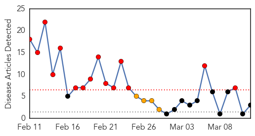
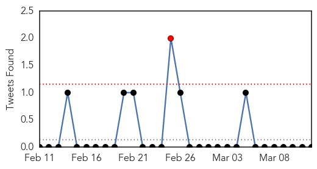
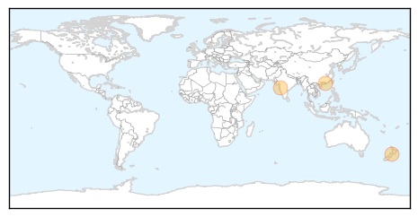
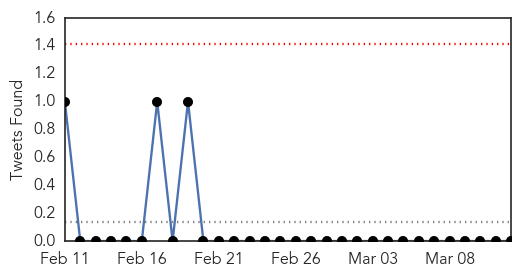
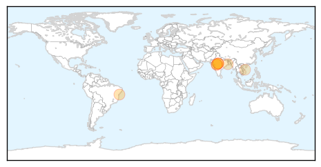

MERS
30-Day Web Trend
15 alerts, 4 warnings

30-Day Twitter Trend
1 alerts, 0 warnings

Article Locations
Article Confidences

Top Articles:
Top Tweets:
-
No tweets found for Mar 12, 2015
Dengue Fever
30-Day Web Trend
0 alerts, 0 warnings
30-Day Twitter Trend
0 alerts, 0 warnings

Article Locations
Article Confidences
Top Articles:
- 0.985
- 11-year-old girl dies of suspected dengue in Indore
- 0.980
- 'Spread of Fevers Has Come Down in State'
- 0.977
- Indore: Health officials hold meet, draw plan to curb dengue spread
- 0.934
- Cong, AAP hit out at civic body, MP govt for 'failing to check' dengue
- 0.914
- Over 224 thousand dengue cases reported this year
- 0.834
- Bhopal: Citizens dread dengue menace as toll mounts, officials helpless
- 0.741
- Kolkata: Salt Lake municipal body gears up to tackle dengue
- 0.709
- Localities asked to brace for dengue, hand-foot-and-mouth diseases
- 0.544
- MP: Dengue claims another life in Bhopal
Top Tweets:
-
No tweets found for Mar 12, 2015